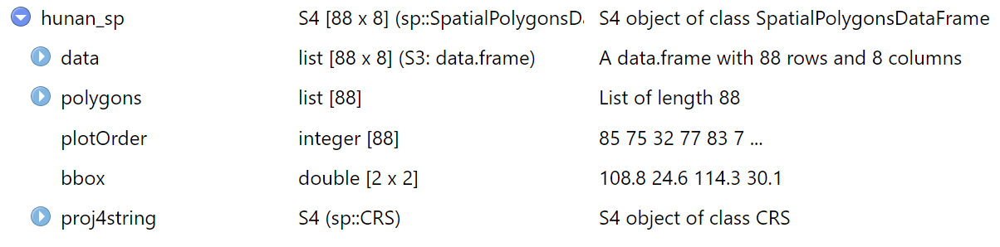
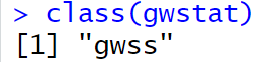
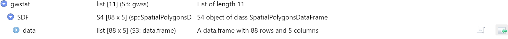
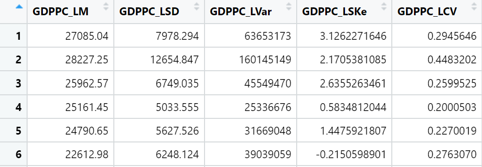
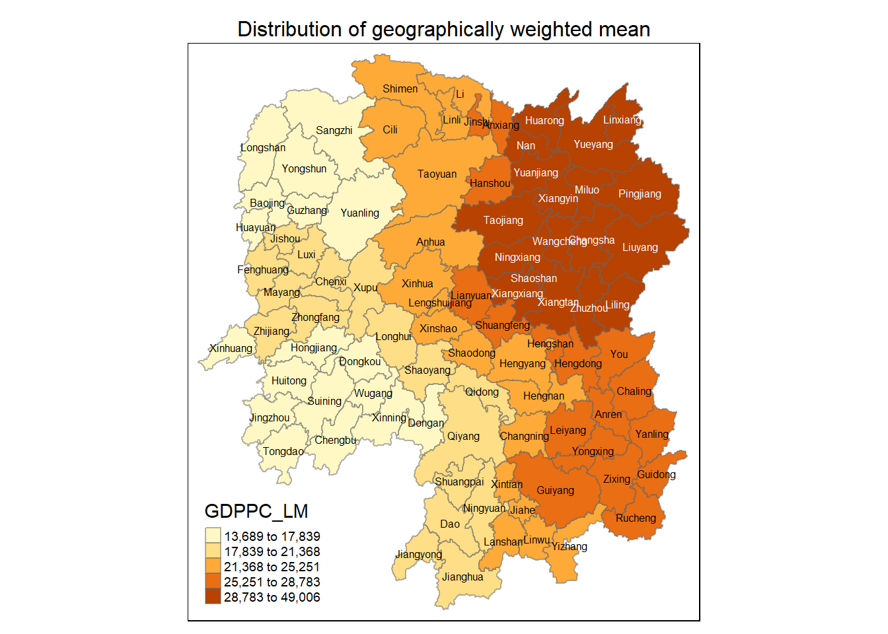

pacman::p_load(sf, ggstatsplot, spdep, tmap, tidyverse, knitr,GWmodel)In-class Exercise 4
In-class Exercise 4: Spatial Weights and Applications
4.1 Study Area and Data
Two data sets will be used in this hands-on exercise:
Hunan county boundary layer. This is a geospatial data set in ESRI shapefile format.
Hunan_2012.csv: This csv file contains selected Hunan’s local development indicators in 2012.
4.2 Installing and loading R packages
To carry out the analysis, we install and load the following R packages:
4.3 Preparing the data
The geospatial data is in ESRI shapefile format and the attribute table is in csv fomat.
The code chunk below uses st_read() of sf package to import Hunan shapefile into R. The imported shapefile will be a simple features object of sf.
hunan_sf <- st_read(dsn = "data/geospatial",
layer = "Hunan")Reading layer `Hunan' from data source
`C:\mooseksm\ISSS626-GAA\In-class_Ex\In-class_Ex04\data\geospatial'
using driver `ESRI Shapefile'
Simple feature collection with 88 features and 7 fields
Geometry type: POLYGON
Dimension: XY
Bounding box: xmin: 108.7831 ymin: 24.6342 xmax: 114.2544 ymax: 30.12812
Geodetic CRS: WGS 84note that above data has not been transformed - this is intentional for this use case so that know that there are packages that have provision for projection
note that geometry type is single polygon - always note that administrative boundaries can be captured as polygon or multipolygon
Next, we will import Hunan_2012.csv into R using read_csv() of readr package. The output is R dataframe class.
hunan2012 <- read_csv("data/aspatial/Hunan_2012.csv")- do not use read.csv (Base R)
The code chunk below is used to update the attribute table of hunan’s SpatialPolygonsDataFrame with the attribute fields of hunan2012 data frame. This is performed using left_join() of dplyr package.
hunan_sf <- left_join(hunan_sf,hunan2012) %>%
select(1:3,7,15,16,31,32)combining spatial data with aspatial data - use dplyr left_join() function but in reality, not so straightforward as need common identifier between the datasets i.e. value in a particular variable must be the same - need to carefully check through the names and actual values in the datasets to make sure they are the same else might not be able to join (recall hands-on ex01 where administrative boundary of singapore is in uppercase while that in singstat data is a mix of upper and lowercase)
both datasets have “County” column hence while code chunk did not define the join field, the code automatically uses the “County” column to join. if hunan_sf did not have “County” column, would have mention the join argument by as “NAME_3” in hunan_sf and “County” in hunan2012.
if there’s a lot of names in the field, can do a unique match to compare
Select chooses these columns: “NAME_2”, “ID_3”, “NAME_3”, “County”,“GDPPC”, “GIO”,“Agri”,“Service”, “geometry”
4.4 Converting to SpatialPolygonDataFrame
hunan_sp <- hunan_sf %>%
as_Spatial()
sp separates the components of data under sf:
data contains all data except geometry data
under polygons, geometry data
Typing the below into console, we note the data object type:

4.5 Geographically Weighted Summary Statistics with adaptive bandwidth
4.5.1 Determine adaptive bandwidth
- both CV and AIC methods produce the same results - that the optimum number of neighbours is 22 but note that this is not always the case i.e. can produce different results
bw_CV <- bw.gwr(GDPPC ~ 1,
data = hunan_sp,
approach = "CV",
adaptive = TRUE,
kernel = "bisquare",
longlat = T)Adaptive bandwidth: 62 CV score: 15515442343
Adaptive bandwidth: 46 CV score: 14937956887
Adaptive bandwidth: 36 CV score: 14408561608
Adaptive bandwidth: 29 CV score: 14198527496
Adaptive bandwidth: 26 CV score: 13898800611
Adaptive bandwidth: 22 CV score: 13662299974
Adaptive bandwidth: 22 CV score: 13662299974 first line is dependent variable ~ independent variable (put an arbitrary number 1 if don’t have independent variable), else without formula, won’t work and give error message –> this is a global model
second line is hunan_sp data
approach either CV or AIC (see next tab)
adaptive = FALSE means calculating fixed bandwith, TRUE means adaptive bandwidth –> in this case, indicate the number of neighbours (note that it starts with 62 then slowly bury the number of neighbours)
kernel is the same as spatial point pattern analysis, can change to other methods, not likely to affect much
longlat = T, indicate that its in decimal degree - great circle distances will be calculated
note that the results are in km
based on GDPPC, optimum number of neighbours is 22
bw_CV[1] 22- smaller AIC value, the better. at some point, AIC points will converge and no longer change/change rate very small - that would be optimal value
bw_AIC <- bw.gwr(GDPPC ~ 1,
data = hunan_sp,
approach = "AIC",
adaptive = TRUE,
kernel = "bisquare",
longlat = T)Adaptive bandwidth (number of nearest neighbours): 62 AICc value: 1923.156
Adaptive bandwidth (number of nearest neighbours): 46 AICc value: 1920.469
Adaptive bandwidth (number of nearest neighbours): 36 AICc value: 1917.324
Adaptive bandwidth (number of nearest neighbours): 29 AICc value: 1916.661
Adaptive bandwidth (number of nearest neighbours): 26 AICc value: 1914.897
Adaptive bandwidth (number of nearest neighbours): 22 AICc value: 1914.045
Adaptive bandwidth (number of nearest neighbours): 22 AICc value: 1914.045 note that the change in AIC becomes very small and eventually stops
based on GDPPC, optimum number of neighbours is 22
bw_AIC[1] 224.5.2 Computing geographically weighted summary statistics
gwstat <- gwss(data = hunan_sp,
vars = "GDPPC",
bw = bw_AIC,
kernel = "bisquare",
adaptive = TRUE,
longlat = T)need to make sure that the bottom 3 fields are the same as the above in 4.5.1 Determine adaptive bandwidth
 is a gwss object (specially customised object - list that contains many things)
mostly are metadata
what is of interest is SDF - spatialdataframe - contains all spatial information + data information

can click on logo:

GDPPC_LM: local mean (have 88 local means that is based on average of 22 neighbours)
GDPPC_LSD: local standard deviation
GDPPC_LSKe: local standard estimations
GDPPC_LCV: local co-variance
All are taking the average of 22 neighbours
4.5.3 Preparing the output data
Code chunk below is used to extract SDF data table from gwss object output from gwss(). It will be converted into data.frame by using as.data.frame():
gwstat_df <- as.data.frame(gwstat$SDF)Next, cbind() is used to append the newly derived data.frame onto hunan_sf sf data frame:
hunan_gstat <- cbind(hunan_sf,gwstat_df)- note that only able to use cbind() with the understanding that there’s no change in sequence of data in both dataframes
4.5.4 Visualising geographically weighted summary statistics

help to generalise the pattern
tm_fill n=5 sets the number of gradient
tm_borders draw the border around polygon, =1 is full black, closer to 0 - greater transparency
tm_layout add in other details
tm_shape(hunan_gstat)+
tm_fill("GDPPC_LM",
n = 5,
style = "quantile") +
tm_borders(alpha = 0.5) +
tm_layout(main.title = "Distribution of geographically weighted mean",
main.title.position = "center",
main.title.size = 1.0,
legend.text.size = 0.6,
legend.height = 1.20,
legend.width = 1.20,
frame = TRUE)+
tm_text("County", size = 0.5)4.5.5 Relationship between GDPPC and Gross Industry Output
4.6 Geographically Weighted Summary Statistics with fixed bandwidth
4.6.1 Determine fixed bandwidth
- note that results for CV and AIC are not the same - AIC optimum is 160.5517, almost twice of CV optimum of 76.29126 (longer bandwidth have smoother output, shorter bandwidth have more details)
bw_CV <- bw.gwr(GDPPC ~ 1,
data = hunan_sp,
approach = "CV",
adaptive = FALSE,
kernel = "bisquare",
longlat = T)Fixed bandwidth: 357.4897 CV score: 16265191728
Fixed bandwidth: 220.985 CV score: 14954930931
Fixed bandwidth: 136.6204 CV score: 14134185837
Fixed bandwidth: 84.48025 CV score: 13693362460
Fixed bandwidth: 52.25585 CV score: Inf
Fixed bandwidth: 104.396 CV score: 13891052305
Fixed bandwidth: 72.17162 CV score: 13577893677
Fixed bandwidth: 64.56447 CV score: 14681160609
Fixed bandwidth: 76.8731 CV score: 13444716890
Fixed bandwidth: 79.77877 CV score: 13503296834
Fixed bandwidth: 75.07729 CV score: 13452450771
Fixed bandwidth: 77.98296 CV score: 13457916138
Fixed bandwidth: 76.18716 CV score: 13442911302
Fixed bandwidth: 75.76323 CV score: 13444600639
Fixed bandwidth: 76.44916 CV score: 13442994078
Fixed bandwidth: 76.02523 CV score: 13443285248
Fixed bandwidth: 76.28724 CV score: 13442844774
Fixed bandwidth: 76.34909 CV score: 13442864995
Fixed bandwidth: 76.24901 CV score: 13442855596
Fixed bandwidth: 76.31086 CV score: 13442847019
Fixed bandwidth: 76.27264 CV score: 13442846793
Fixed bandwidth: 76.29626 CV score: 13442844829
Fixed bandwidth: 76.28166 CV score: 13442845238
Fixed bandwidth: 76.29068 CV score: 13442844678
Fixed bandwidth: 76.29281 CV score: 13442844691
Fixed bandwidth: 76.28937 CV score: 13442844698
Fixed bandwidth: 76.2915 CV score: 13442844676
Fixed bandwidth: 76.292 CV score: 13442844679
Fixed bandwidth: 76.29119 CV score: 13442844676
Fixed bandwidth: 76.29099 CV score: 13442844676
Fixed bandwidth: 76.29131 CV score: 13442844676
Fixed bandwidth: 76.29138 CV score: 13442844676
Fixed bandwidth: 76.29126 CV score: 13442844676
Fixed bandwidth: 76.29123 CV score: 13442844676 bw_CV[1] 76.29126bw_AIC <- bw.gwr(GDPPC ~ 1,
data = hunan_sp,
approach = "AIC",
adaptive = FALSE,
kernel = "bisquare",
longlat = T)Fixed bandwidth: 357.4897 AICc value: 1927.631
Fixed bandwidth: 220.985 AICc value: 1921.547
Fixed bandwidth: 136.6204 AICc value: 1919.993
Fixed bandwidth: 84.48025 AICc value: 1940.603
Fixed bandwidth: 168.8448 AICc value: 1919.457
Fixed bandwidth: 188.7606 AICc value: 1920.007
Fixed bandwidth: 156.5362 AICc value: 1919.41
Fixed bandwidth: 148.929 AICc value: 1919.527
Fixed bandwidth: 161.2377 AICc value: 1919.392
Fixed bandwidth: 164.1433 AICc value: 1919.403
Fixed bandwidth: 159.4419 AICc value: 1919.393
Fixed bandwidth: 162.3475 AICc value: 1919.394
Fixed bandwidth: 160.5517 AICc value: 1919.391 bw_AIC[1] 160.5517Visualising local correlation
need to note how many neighbours you are using to define the correlation
Corr: parametric vs Spearman: non-parametric - indicate how well each correlate with neighbour
== end ==
In-class notes from Prof Kam:
clean environment, save data image when closing session can help to prevent upload of temporary files
GWmodel package: bw.gwr recommend optimum number of neighbours